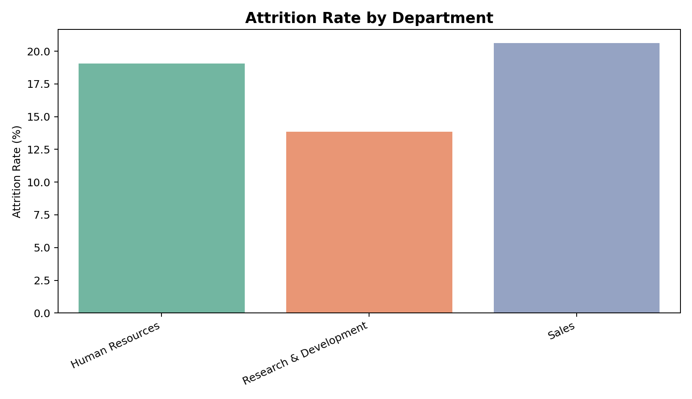
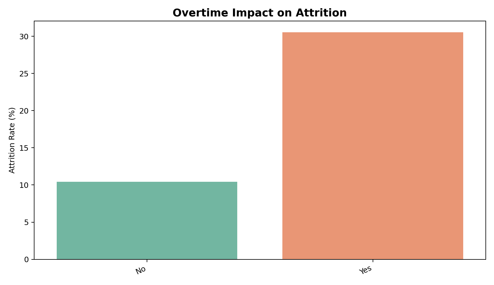
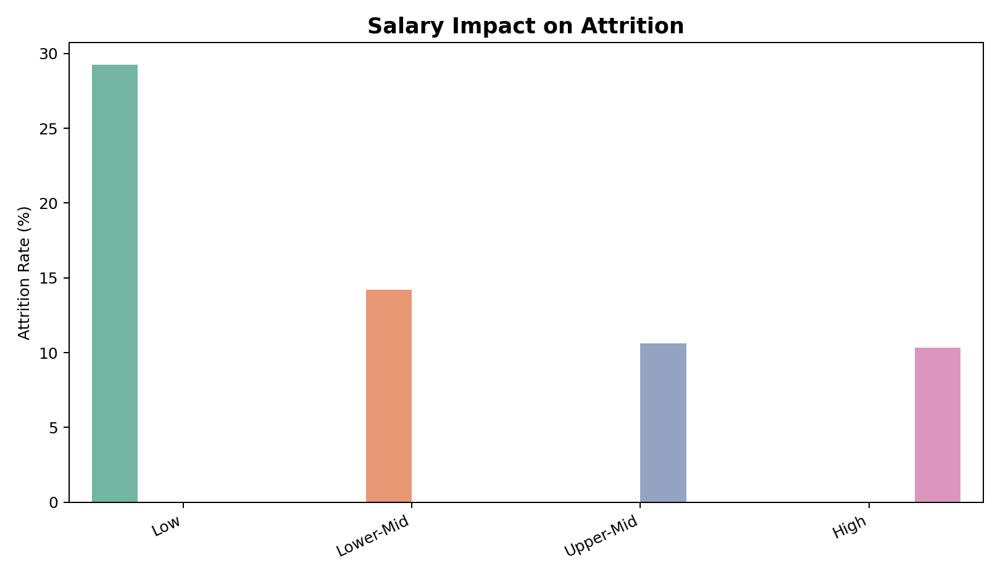
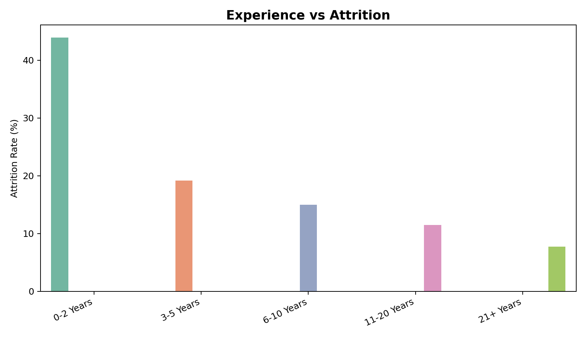
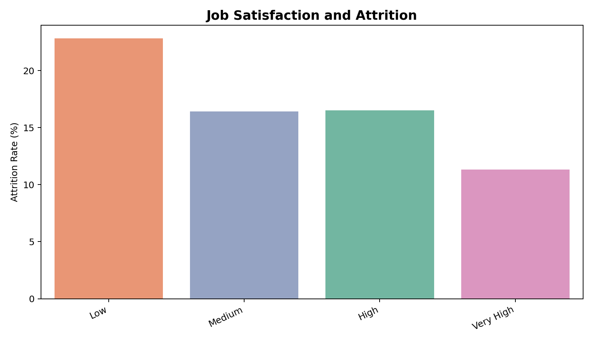

Highest-Risk Department
Sales leads department attrition at 20.63%.
Overtime Signal
Overtime employees attrite at 30.53%, compared with 10.44% without overtime.
Salary Impact
Low salary band attrition is 29.27%, versus 10.33% in the high salary band.
Attrition by Department

Overtime Impact

Salary Impact

Experience vs Attrition

Job Satisfaction Trends

Department Retention Table
| Department | Employees | Attrition | Retention % | Attrition % |
|---|---|---|---|---|
| Sales | 446 | 92 | 79.37 | 20.63 |
| Human Resources | 63 | 12 | 80.95 | 19.05 |
| Research & Development | 961 | 133 | 86.16 | 13.84 |
High-Risk Employee Segments
| Department | Job Role | Salary Band | Tenure Band | Overtime | Employees | Attrition % |
|---|---|---|---|---|---|---|
| Sales | Sales Representative | Low | 0-1 Years | Yes | 8 | 87.5 |
| Research & Development | Research Scientist | Low | 0-1 Years | Yes | 11 | 81.82 |
| Research & Development | Laboratory Technician | Lower-Mid | 4-7 Years | Yes | 5 | 80.0 |
| Research & Development | Laboratory Technician | Low | 0-1 Years | Yes | 13 | 76.92 |
| Sales | Sales Representative | Low | 2-3 Years | Yes | 8 | 75.0 |
| Research & Development | Laboratory Technician | Lower-Mid | 0-1 Years | Yes | 6 | 66.67 |
| Sales | Sales Executive | High | 2-3 Years | Yes | 6 | 66.67 |
| Research & Development | Laboratory Technician | Low | 4-7 Years | Yes | 10 | 60.0 |